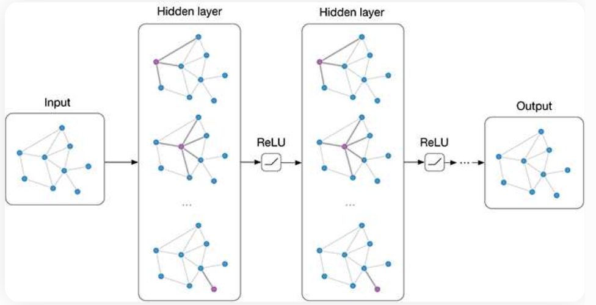

Unsupervised Graph learning#
Unsupervised machine learning refers to a category of algorithms that can learn patterns from data without relying on labeled examples. In the context of graph data, these algorithms are particularly valuable because they operate using only the graph structure (e.g., adjacency matrix) and optionally node features, without requiring any prior knowledge of specific tasks such as classification or regression.
A widely adopted strategy in unsupervised graph learning is to learn node or graph embeddings—that is, low-dimensional vector representations that capture the structure and relationships within the graph. These embeddings are typically optimized to preserve similarity between nodes or substructures, enabling the reconstruction of relationships like those expressed in the adjacency matrix.
What makes this approach powerful is that the learned representations can encode latent and abstract patterns, revealing complex dependencies or communities that are not explicitly observable in the original data.
As a result, these embeddings serve as rich feature sets for various downstream tasks such as node clustering, link prediction, and anomaly detection—even though no supervision was provided during training.
{kind=link}
Unsupervised Learning for Graph Data#
This diagram categorizes the main approaches for unsupervised machine learning on graph-structured data, specifically focusing on representation learning:
🔹 1. Shallow Embedding#
Idea: Learn a fixed vector (embedding) for each node, edge, or graph using simplified models.
Matrix Factorization-based Methods:
Learn embeddings by factorizing similarity matrices (e.g., adjacency matrix).
Examples:
HOPE,GraphRep,Graph Factorization
Skip-gram-based Methods:
Inspired by word2vec; learn embeddings based on local node neighborhoods.
Examples:
Node2Vec,Edge2Vec,Graph2Vec
Usage:
The learned embeddings can be used as input features for traditional supervised or unsupervised models (e.g., SVM, KMeans).
Characteristics:
Simple architecture.
Embedding and learning are decoupled.
Cannot adapt embeddings during downstream tasks.
🔸 2. Autoencoders#
Idea: Learn to encode the graph structure into a low-dimensional latent space and reconstruct it.
Capture non-linear relationships between nodes.
Components:
Encoder: Maps nodes to embeddings.
Decoder: Reconstructs graph properties like adjacency.
Usage:
Learns complex, nonlinear structural patterns.
Embeddings can be used for clustering or visualization.
Characteristics:
Captures structural similarity and proximity.
Can reveal hidden structural roles.
Example:
SDNE(Structural Deep Network Embedding)
{kind=link}
ref:https://www.mdpi.com/2624-831X/4/3/16
🔹 3. Graph Neural Networks (GNNs)#
Idea: Learn embeddings by aggregating and transforming information from neighbors in the graph.
Spectral Methods:
Based on graph Laplacian and spectral theory.
Example:
GCN(Graph Convolutional Network)
Spatial Methods:
Operate on node neighborhoods in the graph structure.
Example:
GraphSAGE
Usage:
End-to-end learning for node/graph classification, link prediction, etc.
Suitable for semi-supervised or supervised learning tasks.
Characteristics:
Embeddings are dynamically updated during training.
Highly expressive; captures both local and global graph structures.

Key Insight:#
These unsupervised methods aim to capture structural and semantic patterns in the graph, enabling tasks such as clustering, link prediction, and node classification — without requiring labeled data.
Summary#
Approach |
Embedding Use |
Learns Structure |
Task Coupling |
|---|---|---|---|
Shallow Embedding |
Input to ML models |
Basic |
No |
Autoencoders |
Input or analysis |
Yes (nonlinear) |
Partially |
GNNs |
End-to-end learning |
Yes (deep) |
Yes |